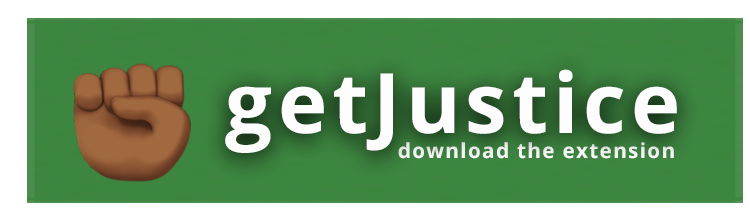
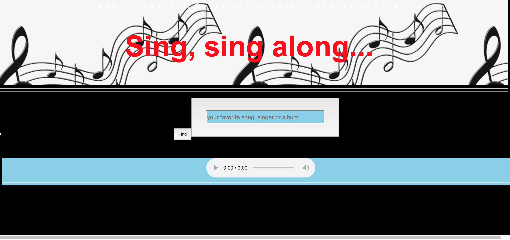

getJustice
What the project is about:
Very often, when you are scrolling through your social media page, you come across some instance of injustice that you feel very strongly about. Till now, all you have been able to do is retweet, comment or share the instance, but you have not been able to do anything concrete to get action on it or get the authorites to address the problem. We, the team -- Tiana Horn, David Sedgwick and I -- came up with this solution to get action, as our final project at our 12-week bootcamp at Momentum in Durham.
The Team
Demo of the getJustice app
We presented the getJustice app at the Full Frame Theatre in the American Underground on January 25, 2019 to an august audience of top techies and CEOs. Technologies used: Chrome Extension, JavaScript and jQuery, Python, Django, Bootstrap, external SMTP server, Github, Heroku, Agile. Read More
Page Top HomeWhat we have done:
We have set up a web app getJustice where you can download our Chrome extension with our button. After that, any time you see an instance of injustice on a webpage and want to report it to the police, civic authorities or civil rights groups, you just click on our extension. It takes a screenshot and attaches it to an email form. You just have to choose what kind of injustice it is and click send. The form goes to all the concerned authorities as a report along with your screenshot. If you wish to, you can add details in the message to be send. You can also login and add your name to the report. Your email id will automatically be registered and the authorities can reply to you. Else, you can choose to remain anonymous, and the report will still go to the authorities, within 30 seconds of your time. You can also send the report directly from our webpage itself, where you can also add an image or screenshot if you want to.
Here is the video of the presentation of our app
How we did it:
We learnt how to set up a Chrome extension first. Here is a bit of the code we used, which is essentially JavaScript. We created a manifest.json file and a background.js file. Then we put in this code to get the screenshot:
chrome.browserAction.onClicked.addListener(function (tab) {
chrome.tabs.captureVisibleTab({ format: "png" }, function (dataUrl) {
console.log(dataUrl)
chrome.tabs.create({ url: "https://getjustice.herokuapp.com/ext-report/" }, function (tab) {
chrome.tabs.executeScript(tab.id, {
code: `
let input = document.getElementById("new-screenshot")
input.src = '${dataUrl}'
let imgData = document.getElementById("screenshot-data")
imgData.setAttribute("value", "${dataUrl}")
`
})
})
})
});
We used JavaScript to pre-fill our Django form with email addresses of the concerned authorities and a basic text (which can be edited). The screenshot was already attached to this form, but the user also has the option to remove it, if needed. Finally we used Django email to send the mail out through an external SMTP server on Heroku. In the process, we learnt all the ways emails can be compromised and how to put security fixes in place. We also had to figure out how to convert teh screenshot, which was a dataUrl into a png image and send it. Here is the Python code for that:
def screenshot_decoder(dataUrl):
ext, image_data = dataUrl.split(";base64,")
binary_pad = (3-(len(image_data) % 3)) * "="
png = base64.b64decode(image_data + binary_pad)
return png
Full
Code
Other Projects
Page Top
Home
Snip^pet
What the project is about:
Often, we wish there was a website exclusively to list easily reused code snippets for our applications. Our team -- Crystal Ramirez , Dave Sedgwick , Deanna Jacobs and I -- thought it would be really useful to set up such a website, where code can be shared, copied, further edited if needed and reposted. We also wanted users to be able to have list of code snippets that they wished to keep under their own account for quick reuse and for polishing. Our solution: Snip^pet.
The Team
What we did:
We used Python, Django and Javascript, including several third party libraries to work this project out. We started off with building a Django app with models and a PostgreSQL database. We used the Djago REST API to feed in the information to our webpage. We essentially had just one page, with a tab to take the users to their personal page of snippets. We used JavaScript and jQuery to connect the API with the page, making Ajax calls to ensure that the page load time is not high. On the frontend, we used Bootstrap, Bulma and vanilla CSS to design the page and worked extensively with modals. We also used Django Gravatar and template tags to create images to represent our users.
Page Top HomeHow we did it:
We used the Mimesis library to create fake user data for development purposes. To create code snippets, we used individual files of each type of code. For development, we limited the code languages to Python, JavaScript, Ruby and Java. For each of these languages, we created individual code files that were called randomly on the webpage.
We used Django's full text postgres search as our search engine. So any word that was typed into the search box was matched with results. Here is the code we used for that in api.views.py:
from django.contrib.postgres.search import SearchQuery, SearchRank, SearchVector
class SnippetListCreateView(generics.ListCreateAPIView):
serializer_class = SnippetSerializer
filter_backends = (DjangoFilterBackend,)
queryset: Snippet.objects.all().order_by("-created_at")
def get_queryset(self):
vector = SearchVector('language', 'content',
'title', 'author__username')
if self.request.GET.get("search"):
query = self.request.GET.get("search")
return Snippet.objects.annotate(search=vector).filter(search=query)
else:
return Snippet.objects.filter(is_copy=True)
We used clipboard.js to ensure that users can 'snip a copy' of the code on our site. We used highlight.js to ensure that the different code sytax according to each language is retained on the site. Here is the JavaScript code we used to edit and delete snippets.
$.get("/api/my_snippets/").then(function (snippets) {
for (let snippet of snippets) {
$('#user-snips').append(profileHtml(snippet))
}
$(".edit-snippet-button").on('click', function (event) {
let data = $(event.target).parent().data();
$("#edit-snippet-title").val(data.title);
$("#edit-snippet-pk").val(data.pk);
$("#edit-snippet-language").val(data.language);
$("#edit-snippet-content").val(data.content);
$("#edit-snippet-modal").addClass('is-active')
})
$(".delete-snippet-button").on('click', function (event) {
let data = $(event.target).parent().data();
$.ajax({
url: "/api/snippets/" + data.pk + "/",
method: 'DELETE',
contentType: 'application/json',
beforeSend: function (xhr) {
xhr.setRequestHeader('X-CSRFToken', csrftoken)
},
}).then(function () {
let card = $(`.card-body[data-pk="${data.pk}"]`);
card.remove();
})
});
})
Full code
Other Projects
Page Top
Home
Sing Along
What the project is about:
I wanted to combine the old effect of the radio and the modern need of being given a choice on what to listen to. I wanted to let listeners decide whose songs they wanted to hear or opt for their favorite song/album using just the click of a button on a webpage. This app is the result.
The Team
How I did it
I researched the iTunes API and programmed JavaScript and Ajax to work with the HTML5 radio buttons. Have designed the page using just vanilla CSS and HTML5.
Here is a screenshot of the webpage:
Figuring out how to get the radio buttons to play the tunes and how to set up a search bar were the toughest parts of the project. Here is some of the code I used to get the radio buttons to play the music:
document.getElementById('musicbox').addEventListener("click", function (event) {
let dataUrl = $(event.target).parents("div")[0].dataset["url"];
if (dataUrl) {
event.preventDefault()
document.getElementById('play').src = dataUrl;
document.getElementById('play').play()
}
})
Full Code
Other Projects
Page Top
Home
Pathfinder
What the project is about:
How are maps plotted? By using elevations and depths. How does one find a path through the mountians? Well, obviously, one takes the lowest elevation and goes. Yes, true. But how to get the computer to figure out which is the lowest elevation and take that path? That was the challenge that I faced, by developing a Python program for the app, the Pathfinder.
The Team
What I did
I was given a ginormous list of elevations as a text file, like this:
4713 4710 4701 4696 4688 4683 4668 4658 4655 4648 4646 4645 4671 4696
4706 4705 4704 4701 4696 4700 4697 4673 4636 4591 4559 4600 4648 4705
4776 4825 4862 4897 4904 4893 4885 4886 4886 4869 4845 4831 4836 4824
4812 4788 4762 4739 4724 4720 4719 4718 4722 4725 4726 4717 4699 4675
4651 4624 4604 4576 4573 4585 4602 4613 4639 4668 4693 4712 4721 4735
4744 4755 4756 4759 4757 4752 4752 4757 4765 4769 4783 4794 4812 4831
4846 4861 4879 4891 4904 4917 4902 4901 4886 4875 4868 4854 4848 4844
4854 4864 4869 4889 4905 4911 4924 4914 4903 4892 4873 4851 4858 4877
4888 4908 4920 4925 4938 4955 4967 4971 4984 4985 4989 4991 4988 4991
4988 4977 4966 4942 4916 4888 4872 4854 4839 4819 4817 4793 4772 4791
4792 4770 4759 4777 4802 4825 4853 4885 4903 4905 4933 4960 4989 5012
5000 4988 4968 4938 4920 4889 4872 4854 4834 4822 4809 4792 4780 4797
(truncated)
Page Top
Home
How I did it
-
How to plot a path

I evidently needed to use the same put pixel method to plot the path also, so I gave it a different color, this time red. I figured out the formula to get the pixel to go forward: x+1, with y equal to 0. The options were: to go to the row above (x+1, y+1), to go to the row below, (x+1, y-1). The path was the one of the three with the lowest elevation. There was a problem when the path was either at the top of the image or at the bottom, as one of the rows (either up or down) was not an option, as it went out of the map. I ended up importing sys and using infinity to ensure the path did not go out.
Full Code Other Projects Page Top Home